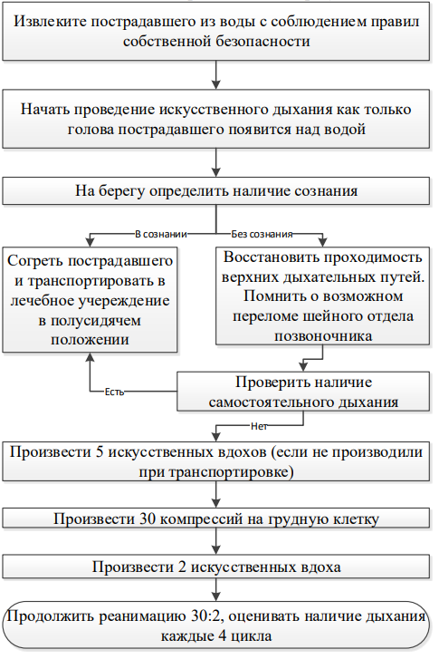
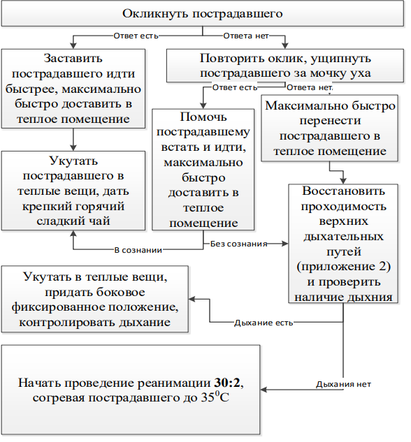
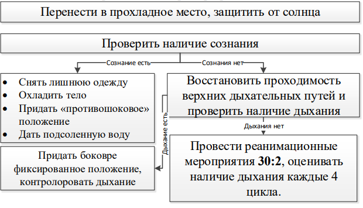

Проведение реанимационных мероприятий в особых условиях. Внутрибольничная реанимация.
В случае остановки кровообращения, разделение реанимационных мероприятий на базовые и расширенные носит условный характер. На практике реанимация представляет собой непрерывный процесс и построена на здравом смысле.
Точная последовательность действий после внутрибольничной остановки кровообращения будет зависеть от многих факторов, включая:
• место происшествия (клиническая/неклиническая часть больницы, мониторируемая/немониторируемая часть больницы);
• подготовку первых ответственных лиц;
• имеющееся в наличии оборудование;
• госпитальную систему реагирования в случае остановки сердца и готовность бригады сердечно-легочной реанимации.
Место, где произошла остановка кровообращения. У пациентов, подключенных к системе мониторинга, остановка сердца фиксируется быстро. Если пациенты лежат в общих отделениях, то может иметь место некоторый период бездействия. В идеале, все пациенты с высоким риском развития остановки кровообращения должны быть под тщательным наблюдением в мониторируемой зоне, где имеются все возможности для проведения незамедлительных реанимационных мероприятий.
Подготовка первых ответственных лиц. Все специалисты, имеющие медицинское образование, должны уметь определить остановку кровообращения, вызвать помощь и начать СЛР. Если возле пациента находится один сотрудник, то он должен убедиться, что помощь вызвана, если несколько, то необходимые действия могут предприниматься одновременно.
Имеющееся в наличии оборудование. Для облегчения быстрого проведения реанимации у пациента с остановкой сердечной деятельности должны быть доступны все помещения госпиталя с оборудованием и лекарственными препаратами. Желательно, чтобы оснащение, используемое для СЛР (включая автоматические наружные дефибрилляторы) и его размещение, а также лекарственные препараты были стандартизированы во всех отделениях госпиталя.
Реанимационная бригада. Реанимационная бригада может представлять собой традиционную бригаду сердечно-легочной реанимации, прибывающей по вызову только в случае выявления остановки сердца. Термин «реанимационная бригада» отражает диапазон задач, которые ей приходится решать. Внутригоспитальная остановка сердца редко происходит внезапно или бывает непредвиденной. Стратегия выявления пациентов с высоким риском остановки сердца может помочь предупредить некоторые из возможных случаев клинической смерти или упредить бессмысленные попытки реанимационных мероприятий у пациентов, проведение СЛР у которых неперспективно.
Отравления
При проведении СЛР при отравлениях следует в первую очередь помнить о безопасности спасателя, особенно если обнаружена сразу группа отравленных. При отравлении цианидами, производными серы, коррозивными веществами и органофосфатами следует избегать проведения искусственного дыхания изо рта в рот. Важным является своевременная идентификация отравляющего вещества, что поможет в дальнейшем лечении. СЛР при отравлениях может занимать значительный период времени, особенно у молодых, что связано с длительным периодом полувыведения веществ. При тяжелых отравлениях возможно при СЛР использовать большие, чем рекомендованные, дозы лекарств.
Модификация расширенных реанимационных мероприятий при различных видах отравления:
- Опиоды – дробное в/в введение налоксона (400 мкг в/в, далее титровать по эффекту до суммарной дозы 6-10 мг). Следует помнить о том, что налоксон действует 45-70 минут, а депрессия дыхания, вызванная опиоидами, продолжается в течение 4-5 часов
Трициклические антидепрессанты – гидрокарбонат натрия в/в
Бета – блокаторы – соли кальция, глюкоза
Блокаторы кальциевых каналов – соли кальция
Дигоксин – специфические антитела к дигоксину
Угарный газ – кислород
Бензодиазепины, кокаин – реанимационные мероприятия по общим принципам
Утопление
При спасении утопающего из воды всегда следует помнить о собственной безопасности
Необходимо предпринять все возможные меры для стабилизации шейного отдела позвоночника, поскольку риск его повреждения при утоплении высок
Главной причиной ОК при утоплении является дыхательная гипоксия, поэтому искусственное дыхание приобретает ключевое значение. Реанимационные мероприятия нужно начинать с 5-и искусственных вдохов, которые можно сделать в воде (схема 3).
Схема 3. Оказание первой помощи при утоплении.

Компрессии грудной клетки проводят по стандартной методике
Электроды дефибриллятора накладывать только сухую грудную клетку
РРМ проводят по стандартному алгоритму, но с учетом особенностей:
Ведущая роль обеспечения проходимости дыхательных путей;
При наличии гипотермии (менее 30⁰ С) не следует вводить лекарства и проводить более 3-х попыток дефибрилляции до тех пор, пока температура тела не поднимется выше 30⁰ С. Требуется активное согревание и тщательный мониторинг температуры тела;
Длительное утопление приводит к гиповолемии, требующей коррекции;
При утоплении в пресной воде нарастает гиперкалиемия – необходимо при проведении РРМ внутривенное введение 10 мл 10% раствора кальция глюконата.
Общее переохлаждение
Схема 4. Оказание первой помощи при переохлаждении.

При общем переохлаждении пострадавший может переносить значительно большие периоды ОК, поэтому только неизлечимые последствия острой травмы, несовместимой с жизнью, может быть противопоказанием к проведению СЛР (схема 4).
РРМ проводят по стандартному алгоритму с учетом особенностей:
- Гипотермия может вызвать повышенную ригидность грудной клетки,
что затруднит компрессии и искусственное дыхание
- Лекарственные препараты будут неэффективны при гипотермии,
поэтому их введение следует отсрочить до согревания пострадавшего (выше
30⁰ С). После согревания интервалы между введениями лекарств следует
удвоить из-за замедленного при гипотермии метаболизма, а по достижении
нормотермии – вводить в стандартном режиме
- Аритмии (кроме ФЖ), возникающие при гипотермии, самостоятельно
разрешаются по согревании
- В состоянии гипотермии нанести 3 последовательных разряды
дефибриллятора. При их неэффективности отложить дефибрилляцию до
согревания пострадавшего.
- Согревание проводить внутривенной инфузией подогретых до 400С
растворов (изотонический раствор + раствор глюкозы 5% в соотношении
2:1).
Перегревание
БРМ и РРМ проводятся по общим принципам (схема 5). При развитии теплового коллапса необходимо рассмотреть вопрос о введении вазопрессоров. Быть готовым к введению противосудорожных препаратов.
Схема 5. Оказание первой помощи при перегревании.

Остановка кровообращения при приступе астмы
БРМ проводят по общим правилам.
РРМ предполагает включение ранней интубации и ИВЛ.
Перераздувание легких при астме приводит к повышению сопротивления грудной клетки, что потребует более высоких энергий разряда дефибриллятора.
Остановка кровообращения при анафилаксии
Особой проблемой является обеспечение проходимости дыхательных путей и искусственное дыхание на фоне выраженного отека верхних дыхательных путей, а также инфузионная терапия для возмещения объема сосудистого русла на фоне вазодилатации.
Антигистаминные препараты, кортикостероиды, бронходилататоры следует использовать в постреанимационном периоде.
Остановка кровообращения при травме
Важной причиной ОК при травме является ушиб сердца, что необходимо учитывать при проведении инфузионной терапии.
РРМ должны включать в себя коррекцию обратимых причин ОК (гипоксия, кровопотеря, пневмоторакс, тампонада сердца).
Остановка кровообращения при поражении электрическим током
При проведении БРМ и РРМ могут возникнуть сложности в обеспечении проходимости дыхательных путей вследствие ожогов лица и шеи. Также следует помнить о возможном наличии травмы шейного отдела позвоночника.
При поражении электрическим током возможна изолированная остановка дыхания, требующей проведения искусственного дыхания во избежание последующей гипоксической комы.
При поражении переменным током чаще развивается ФЖ, постоянным – асистолия (схема 6).